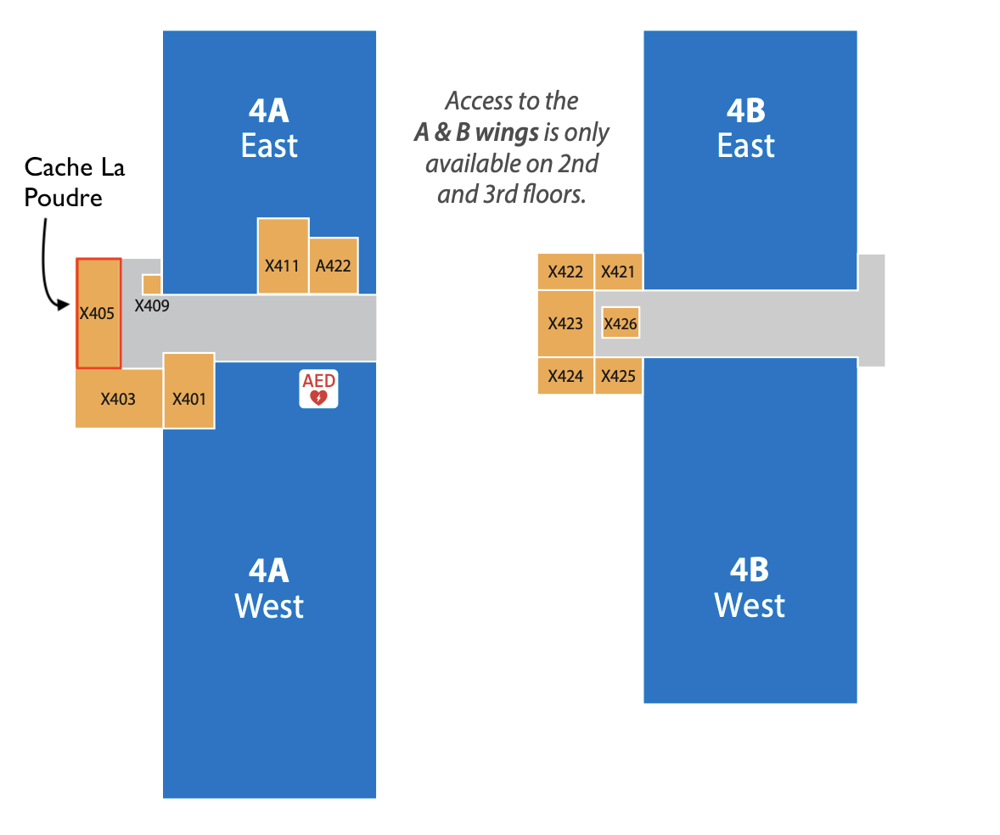

2023 Model Owners Workshop#
The Holistic Modeling Portfolio Coordination Project is a three-year project with a goal of building the community of WETO software stakeholders. One aspect of this project is an annual workshop among various WETO software stakeholders. The first workshop was held on September 7, 2023, at NREL’s Golden Campus, and it was primarily focused on model owners - people directly responsible for funding, planning, and developing this collection of software. The announcement, a summary report, and notes from this event are available in 2023 Workshop.
The 2024 workshop is tentatively scheduled for June 2024, and it will incorporate the perspective of consumers of WETO software including practitioners using these tools in their work and developers extending or incorporating these projects into other software. Contact Rafael Mudafort (rafael.mudafort@nrel.gov) with any questions.
2023 Workshop#
Summary of Proceedings#
Please see 2023 Workshop Report for a summary of the presentations and discussions from the workshop.
Announcement#
A component of the Holistic Modeling Portfolio Coordination Project is to coordinate and host an annual workshop with the purpose of strengthening the community of WETO software owners. The first workshop will be help on September 7, 2023, at NREL’s Golden Campus.
The objective of the first workshop is to initialize the community. To that end, two primary topics will be threaded throughout the conversations:
Opportunities and strategies to elevate the quality of WETO software
Holistic evaluation of the existing portfolio
There will be two full-workshop discussions and two breakout sessions of smaller groups. Prior to each discussion, preplanned talks from WETO and members of the Holistic Modeling project will seed the conversations. Please see the Agenda and Day-Of Logistics for details.
All attendees are asked to complete the following tasks prior to the workshop:
Review the Software Listing to ensure that all WETO-supported software within your field of expertise is listed.
Create a pull request to nrel/WETOStack with an attributes description for your software projects following the guidance in Attribute Schema.
Review the Agenda and Discussion topics.
Contact
Please contact Rafael Mudafort (rafael.mudafort@nrel.gov) with any questions.
Agenda#
| Start Time | End Time | Event | Speaker |
|---|---|---|---|
| 8:00 | 8:30 | Coffee chat / intros | |
| 8:30 | 8:45 | Welcome, intro, workshop goals and rules | Rafael Mudafort |
| 8:45 | 9:15 | DOE WETO Software Context + Q&A | Ben Hallissy (Virtually) |
| 9:15 | 10:00 | Group: What is the purpose of WETO Software? | All |
| 10:00 | 10:15 | Break | |
| 10:15 | 11:15 | Portfolio Coordination Project Overview + Portfolio Overview | Garrett Barter + Technical area experts |
| 11:15 | 11:50 | Breakout: Broadly, where should WETO Software be going? | |
| 11:50 | 12:00 | Reports | Group reporter |
| 12:00 | 1:00 | Lunch | |
| 1:00 | 1:40 | Best Practices Overview | Rafael Mudafort |
| 1:40 | 2:00 | Group feedback and discussion | All |
| 2:00 | 2:35 | Breakout: What are the bottlenecks in our development processes? | |
| 2:35 | 2:45 | Reports | Group reporter |
| 2:45 | 3:00 | Break | |
| 3:00 | 3:40 | Group: Where to invest time and efforts in the upcoming FY's | All |
| 3:40 | 4:00 | Closing remarks | Rafael Mudafort |
| 5:00 | 8:00 | Post workshop happy hour - The Golden Mill |
Discussion 1: What is the purpose of WETO Software?#
This session follows an update from WETO on their perspective and focus on the software we produce. The discussions should be informed by low-level experience but maintain a high-level perspective. The objective of this discussion is to establish a mutual understanding of the group’s perspective on the role and impact of WETO software within the broad context of wind energy.
Topic suggestions - The purpose of WETO software is:
To create the tools to support our own research
To establish a mechanism to disseminate our research
To enable additional research in academia and industry
To provide the industry with tools to design wind energy systems
Discussion 2: Broadly, in what direction should WETO software go?#
This breakout follows an overview of the current WETO software portfolio including descriptions of the domain areas covered and states of maturity. Building on the discussions in Discussion 1 and the portfolio overview, this session focuses on defining the forward-looking technical and domain-specific topics that WETO software should pursue. The objective is to align the community’s expectations around a future technical and programmatic vision.
Topic suggestions:
Integration to other ecosystems (AI/ML, optimizations)
WETO software interoperability
Professionalization / commercialization through industry partnership
Discussion 3: What are the major bottlenecks in our development processes?#
This breakout follows an overview of Best Practices described within the Portfolio Coordination project. The objective is to identify the key bottlenecks in our current workflows with particular attention to things that prevent WETO software from achieving the impacts identified in Discussion 1. The discussions here will be incorporated into the best practices technical report.
Topic suggestions:
Staff and programmatic incentives
Technical barriers - do we have access to the tools we need?
Personnel barriers - do we have staff with the relevant experience?
What’s missing in the proposed best practices?
Discussion 4: Where to invest time and efforts in the upcoming FY’s#
The Portfolio Coordination project will be active through FY25. The final discussion is an opportunity for workshop attendees to inform the direction of future efforts around software quality including within the scope of the Portfolio Coordination project.
Topic suggestions:
Establish a software quality czar to consult with particular groups or models
Focus on interoperability / model alignment
Establish common inputs (i.e. windIO)
Rules of Engagement#
Respect the group’s time and attention
Many people are traveling to attend this workshop, and everyone is setting aside a full day. Please keep all attention within the workshop.
Laptops should remain closed. Note taking on paper is preferred.
Step out of the room to use a phone including sending emails or text messages that require more than a few seconds to write.
Discuss rather than debate
Each session is meant to create discussion and conversation. Arriving at one answer is not required and, in most cases, not desired. The objective is mutual understanding of perspectives.
Day-Of Logistics#
NREL Golden Campus Address
National Renewable Energy Laboratory
15013 Denver West Parkway
Golden, CO 80401
Times
The workshop officially begins at 8:30 am, and the meeting room will be available from 8:00 am with coffee / tea. We will have a break between the start and lunch, and another break between lunch and the end. Lunch is scheduled for noon.
Location
The workshop will take place in the Cache La Poudre meeting room in the RSF building at NREL’s Golden Campus. The room number is “X405” and it is on the RSF’s 4th floor in the A wing.
{kind=link}

Lunch and refreshments
We will have a group lunch at the RSF Cafe, and it will not be covered by the workshop. Coffee and refreshments will be provided within the workshop room.
Breakout sessions
Each breakout session will have its own room. One person should be designated as the reporter to report back overarching themes in the conversation. Additional note takers would be helpful to capture more information. The results of these breakout sessions will be included in a report summarizing the workshop, and they will inform future portfolio coordination efforts.
Parking
NREL staff should park in the parking garage and visitors should park in the visitor lot near the East Gate entrance. See the map below for guidance.

Note
I (Rafael) made this map based on my experience with going to this site, but I have little experience here so please let me know if anything is unclear.
Workshop Notes and Materials#
TODO: Include raw notes, either documents hosted in the repository or text directly, here.